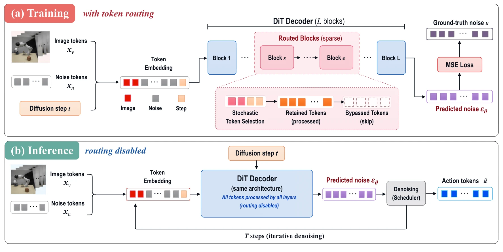
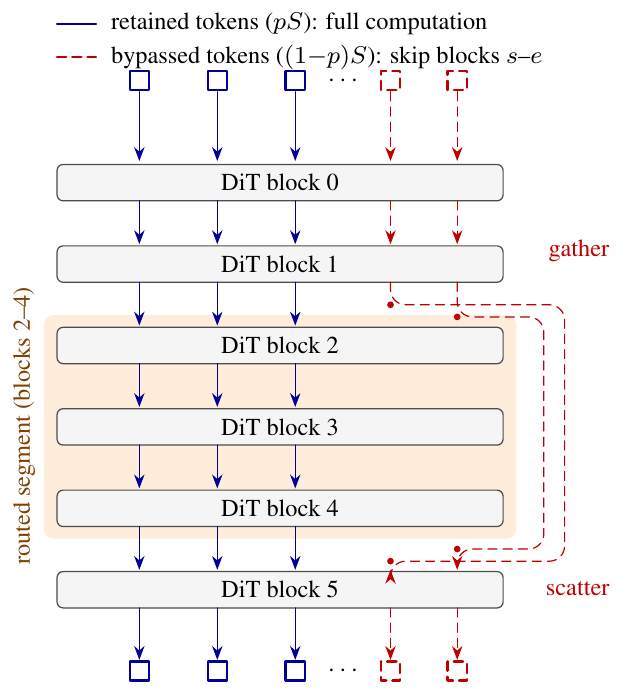
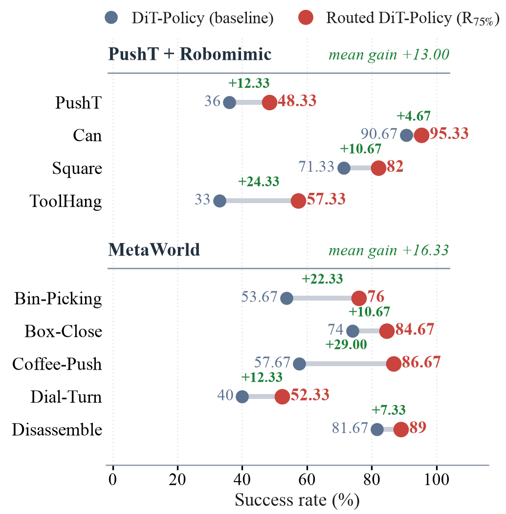
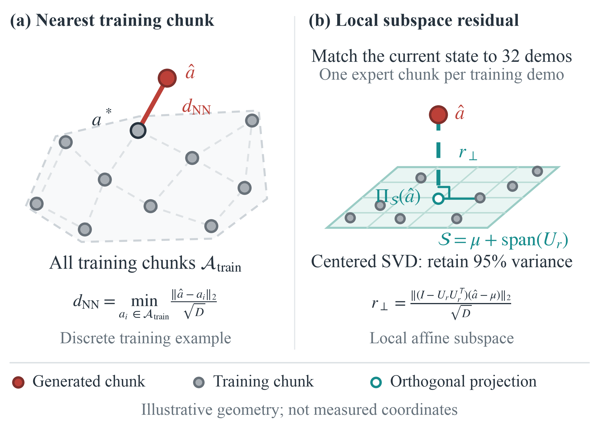
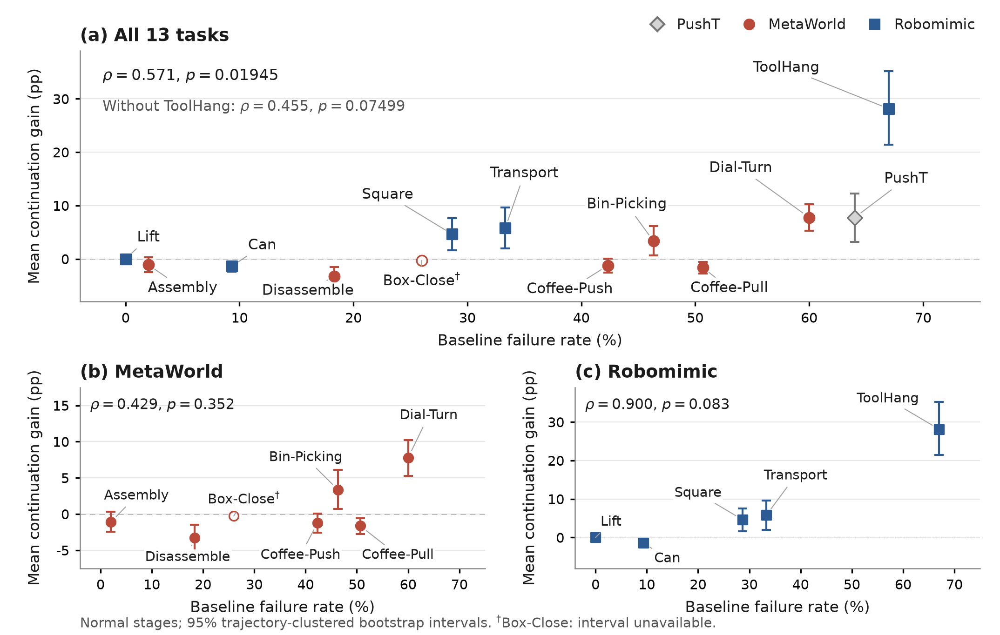
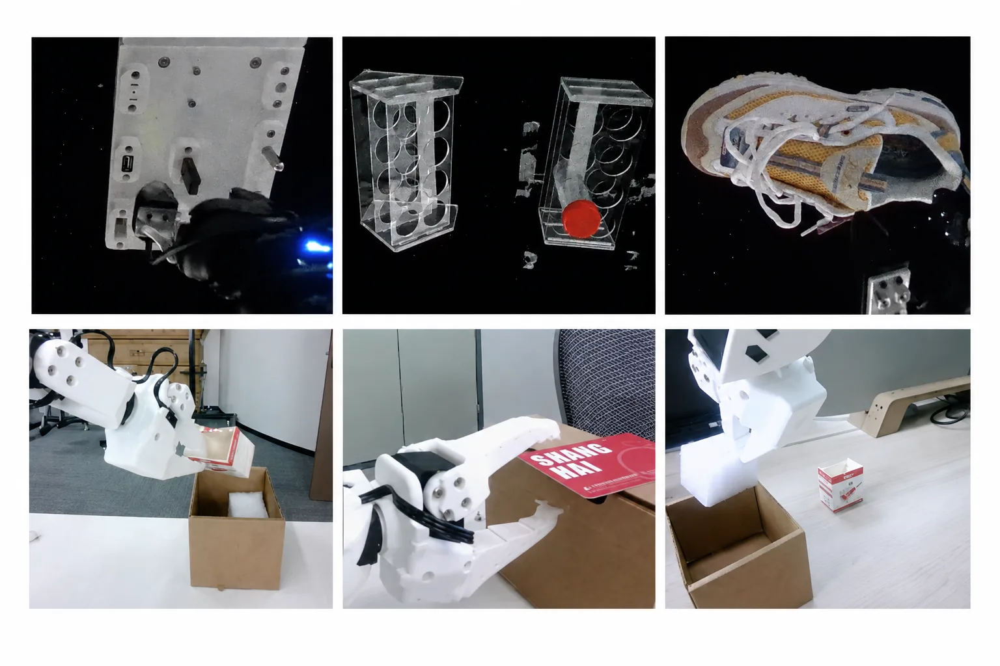
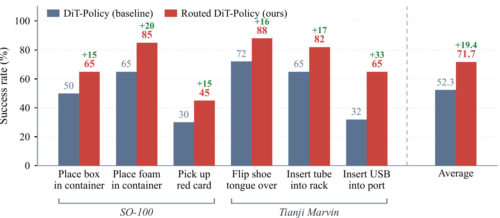

Video Demonstrations
Closed-loop rollouts of Routed DiT-Policy on real hardware. Badges show the success-rate gain over the DiT-Policy baseline (100 rollouts per policy per task).
SO-100 Platform
Tianji Marvin Platform (contact-rich)

Abstract
Diffusion Transformers (DiTs) have emerged as powerful backbones for robotic visuomotor control, yet learning robust closed-loop behavior from limited demonstrations remains challenging because deployment can expose policies to states poorly represented in the training data. We present Routed DiT-Policy, a training-time structural regularizer for DiT-based policies that (1) preserves bypassed token representations via an identity shortcut rather than discarding their content and (2) requires no modifications to the inference architecture or procedure. During training, a randomly selected subset of action tokens bypasses a middle decoder segment and is reinserted unchanged, while the remaining tokens are processed normally; at inference, the full decoder is used. Across 13 simulation tasks under a matched training budget, a single routing configuration raises the task-macro success rate from 65.54% to 75.33%. A separate hardware evaluation on six tasks across two robot platforms increases the mean success rate from 52.33% to 71.67%. Offline action diagnostics reveal differences in local expert-subspace alignment, while evaluation from identical intermediate states identifies task-dependent continuation benefits on ToolHang, Square, and Transport. These results demonstrate that Routed DiT-Policy provides a simple and practical approach to regularizing robotic diffusion policies trained from limited demonstrations.
Method
Stochastic token routing
A uniform subset of k = max(1, ⌊pS⌋) action tokens traverses decoder layers 2–4; the rest bypass them. Default p = 0.75.
Identity-shortcut reinsertion
Bypassed tokens keep their segment-entrance states and are scattered back in order — content is preserved, not dropped or masked.
Zero deployment cost
At inference routing is off: same architecture, same sampler, no learned router and no extra parameters.
Training-time routing in three steps
- Select. For each sample and forward pass, draw a sorted uniform k-subset of action tokens without replacement (fixed size, not per-token Bernoulli).
- Route. Only the gathered tokens pass through the middle decoder segment, so they cannot rely on rigid co-attendance across the full action chunk.
- Reinsert. Updated tokens are scattered back; bypassed tokens keep their entrance representations, creating a stochastic identity pathway.
Unlike dropout, routing never zeroes activations; unlike stochastic depth, it modulates which tokens participate in a contiguous segment rather than suppressing whole residual branches for all tokens. Rates 0.50 and 0.25 serve as sensitivity settings.

Simulation Results
We evaluate 13 tasks across PushT, MetaWorld (7) and Robomimic (5) under a matched 200k-update budget, with three independent training seeds per configuration and 100 rollouts per run. With a single configuration (p = 0.75, layers 2–4), routing raises the task-macro success rate from 65.54 ± 0.15% to 75.33 ± 0.09% (+9.79 pp), improving 9 of 13 tasks. Suite-level gains are +12.33 pp (PushT), +10.86 pp (MetaWorld) and +7.80 pp (Robomimic), and are largest on contact-rich, multi-stage tasks: Coffee-Push (+29.00), ToolHang (+24.33) and Bin-Picking (+22.33).

| Task | Baseline | p = .75 (default) | p = .50 | p = .25 | Δ.75 (pp) |
|---|---|---|---|---|---|
| PushT | |||||
| PushT | 36.00 ± 3.61 | 48.33 ± 2.52 | 50.33 ± 5.13 | 46.67 ± 0.58 | +12.33 |
| MetaWorld | |||||
| Assembly | 98.00 ± 0.00 | 92.33 ± 2.52 | 96.00 ± 1.00 | 99.67 ± 0.58 | -5.67 |
| Bin-Picking | 53.67 ± 1.53 | 76.00 ± 4.36 | 40.67 ± 5.51 | 25.67 ± 1.53 | +22.33 |
| Box-Close | 74.00 ± 2.65 | 84.67 ± 4.04 | 79.33 ± 0.58 | 94.67 ± 0.58 | +10.67 |
| Coffee-Pull | 49.33 ± 1.53 | 49.33 ± 8.39 | 48.00 ± 6.08 | 55.00 ± 6.56 | +0.00 |
| Coffee-Push | 57.67 ± 3.06 | 86.67 ± 2.31 | 83.33 ± 4.73 | 89.67 ± 0.58 | +29.00 |
| Dial-Turn | 40.00 ± 6.93 | 52.33 ± 8.50 | 47.00 ± 5.57 | 30.67 ± 5.51 | +12.33 |
| Disassemble | 81.67 ± 2.52 | 89.00 ± 4.36 | 88.67 ± 4.62 | 87.00 ± 3.61 | +7.33 |
| Robomimic | |||||
| Can | 90.67 ± 4.93 | 95.33 ± 2.08 | 93.33 ± 0.58 | 94.33 ± 1.53 | +4.67 |
| Lift | 100.00 ± 0.00 | 99.67 ± 0.58 | 100.00 ± 0.00 | 100.00 ± 0.00 | -0.33 |
| Square | 71.33 ± 4.62 | 82.00 ± 4.36 | 73.33 ± 6.03 | 83.33 ± 2.31 | +10.67 |
| ToolHang | 33.00 ± 1.00 | 57.33 ± 2.08 | 49.33 ± 3.21 | 69.67 ± 1.53 | +24.33 |
| Transport | 66.67 ± 3.21 | 66.33 ± 7.09 | 68.33 ± 3.51 | 53.67 ± 5.51 | -0.33 |
| Macro avg. | 65.54 ± 0.15 | 75.33 ± 0.09 | 70.59 ± 0.85 | 71.54 ± 0.00 | +9.79 |
Comparison with Structural Controls
Against Stochastic Depth, LayerDrop, a 5-layer decoder and a deterministic fixed token bypass, routing is the only method that improves over Baseline on all three tasks without task-specific failures — e.g. LayerDrop drops to 22.67% on PushT and fixed bypass collapses to 63.33% on Square, highlighting the importance of dynamic token-level randomness.
| Method | PushT | Coffee-Push | Square |
|---|---|---|---|
| Baseline | 36.00 ± 3.61 | 57.67 ± 3.06 | 71.33 ± 4.62 |
| Routing p = .75 (ours) | 48.33 ± 2.52 | 86.67 ± 2.31 | 82.00 ± 4.36 |
| Stochastic Depth | 56.67 ± 6.43 | 82.67 ± 5.51 | 82.00 ± 7.94 |
| LayerDrop | 22.67 ± 3.06 | 74.00 ± 4.36 | 78.67 ± 0.58 |
| 5-layer decoder | 48.33 ± 5.13 | 78.67 ± 4.16 | 79.00 ± 6.56 |
| Fixed token bypass | 28.67 ± 5.69 | 87.00 ± 2.65 | 63.33 ± 0.58 |
Beyond Success Rates
Offline Action Diagnostics on Square
Conditioning all policies on shared observation histories from 20 held-out Square demonstrations, we measure the nearest-neighbor distance dNN to the training library and the residual r⊥ orthogonal to a state-matched local expert subspace (32 demos, 95% variance). Routing at p = 0.75 reduces r⊥ from 0.10127 → 0.09572 (paired difference −0.00555, 95% CI [−0.00984, −0.00112]), while the change in dNN is small and inconclusive (−0.00231) — routing aligns actions with the local expert subspace rather than copying individual recorded chunks.

| Method | dNN | r⊥ | Val. RMS |
|---|---|---|---|
| Baseline | 0.094205 | 0.101271 | 0.220820 |
| Routing p = .75 | 0.091892 | 0.095722 | 0.224964 |
| Routing p = .50 | 0.093508 | 0.096910 | 0.226571 |
| Routing p = .25 | 0.090443 | 0.097654 | 0.224134 |
| Stochastic Depth | 0.089028 | 0.102043 | 0.228768 |
| LayerDrop | 0.088539 | 0.099908 | 0.223024 |
| 5-layer decoder | 0.092703 | 0.098761 | 0.228579 |
| Fixed token bypass | 0.090562 | 0.102118 | 0.222769 |
Continuation from Shared Intermediate States
To separate which states a policy visits from how well it acts in them, we freeze 300 source trajectories per task (half from each policy) and resume both policies from identical physical states and observation histories at predefined semantic stages. Routing shows its strongest conditional-completion gain on ToolHang (47.80% → 75.93%, +28.14 pp, 95% CI [21.40, 35.17]), with positive gains on Dial-Turn (+7.77), PushT (+7.76), Transport (+5.82), Square (+4.64) and Bin-Picking (+3.35). Gains correlate with Baseline failure rate (Spearman ρ = 0.571, p = 0.01945). Divergences are informative: Coffee-Push gains +29.00 pp ordinarily but −1.23 pp in continuation (early-phase strategy), while Transport shows the reverse (−0.33 vs. +5.82 pp).

Real-World Manipulation
Six tasks on two platforms, each with 100 demonstrations and 100 evaluation rollouts per policy. Routing raises the six-task mean from 52.33% → 71.67% (+19.33 pp): SO-100 48.33% → 65.00% (+16.67) and Tianji Marvin 56.33% → 78.33% (+22.00). The largest gain is precise USB insertion, 32% → 65% (+33 pp).


BibTeX
@article{anonymous2026routed,
title = {Routed DiT-Policy: Improving Robotic Manipulation via
Training-Time Token Routing in Diffusion Transformers},
author = {Anonymous Author(s)},
journal = {Under review at IEEE Robotics and Automation Letters (RA-L)},
year = {2026}
}